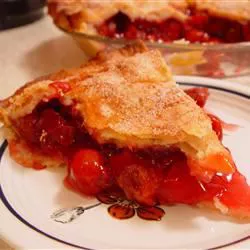

Cherry Pie

Description
Cherry pie is a very excellent dessert.
Ingredients
- 2 1/4 cups of flour.
- 1 /14 cups of sugar.
- 1/2 teaspoon salt.
- 10 tablespoons butter.
- 4 tablespoons vegetable shortening.
- 8 tablespoons cold cream cheese.
- 1/3 cup ice-cold water.
- 3 16oz cans red, tart, pitted cherries; drained and juice reserved.
- 1/4 cup potato starch..
- 1/2 teaspoon almond exract.
- 1 egg white, lightly beaten.
Steps
- Mix flour, 2 tablespoons sugar, and salt in a food processor. Add 8 tablespoons of frozen butter and pulse 4 times. Add shortening and cream cheese into flour mixture; pulse another 4 or 5 times, until clumps are the size of peas.
- Dump mixture into a medium bowl; rub through clean fingertips to blend. Stir in water with a rubber spatula until dough clumps form. Press dough with your palm to form a ball, then divide in half. Wrap each half in plastic wrap, pressing to form thick disks. Refrigerate at least 1 hour.
- Adjust oven rack to lowest position and place a pizza stone or four 9-inch quarry tiles (from a hardware store) on the rack to form an 18-inch square. Preheat the oven to 400 degrees F (200 degrees C).
- In a large saucepan, cook 1 cup cherry juice, 1 cup sugar, potato starch, and a pinch of salt over medium-low heat; stir with a rubber spatula until a very thick paste forms. Scrape paste into cherries in a bowl. Add almond extract; stir to combine.
- Set a dough disk on a floured work surface. Roll into a 14-inch circle. Fold in half and quickly lift into a 9-inch Pyrex pie plate (not deep-dish). Unfold. Fit dough into the pie plate so it is not stretched in any way. Refrigerate.
- Roll remaining dough disk into a 12-inch circle. Remove pie shell from refrigerator, add fruit filling, and dot with 1 tablespoon butter. Fold dough circle in half; quickly lift onto filling and unfold. Trim all around to 1/2 inch beyond edge of the pie plate. Roll overhanging dough under with fingertips; flute the edges.
- Set an 18-inch square of heavy-duty foil on tiles or pizza stone. Set pie on foil and bake until crust just starts to color, about 20 minutes. Remove from oven, brush with egg white, and sprinkle with 1 1/2 tablespoons sugar. Bake until golden brown, about 20 minutes longer. Bring foil up around pie to loosely cover the edges. Bake until filling bubbles, 15 to 20 minutes longer. Cool pie on a wire rack.